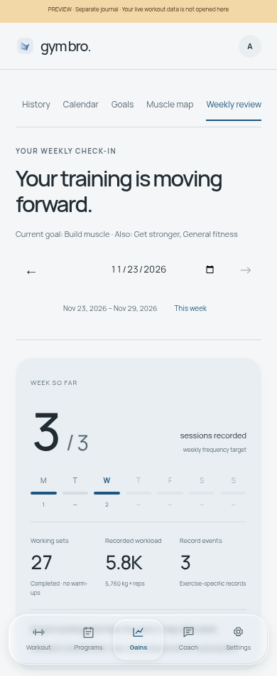
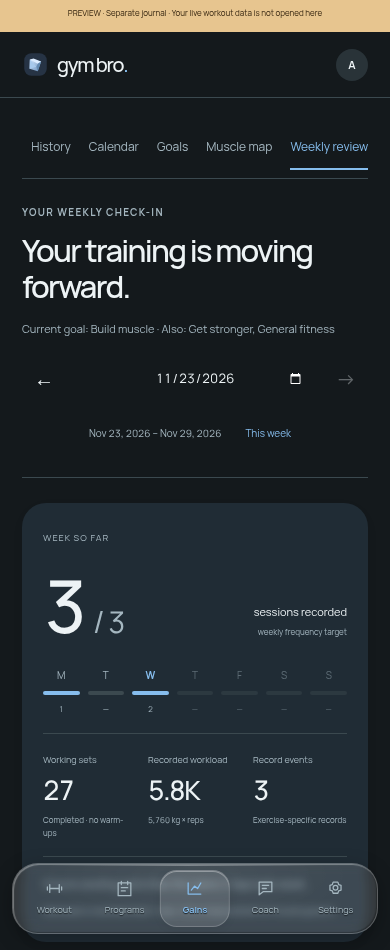

01 / WEEKLY B
Your week, connected.
One summary brings together recorded sessions, daily rhythm and working-set statistics. The six-week workload chart uses the shared touch inspector; existing goals and context remain available.

